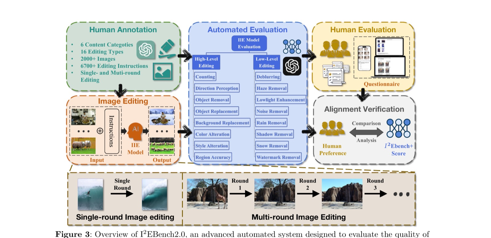
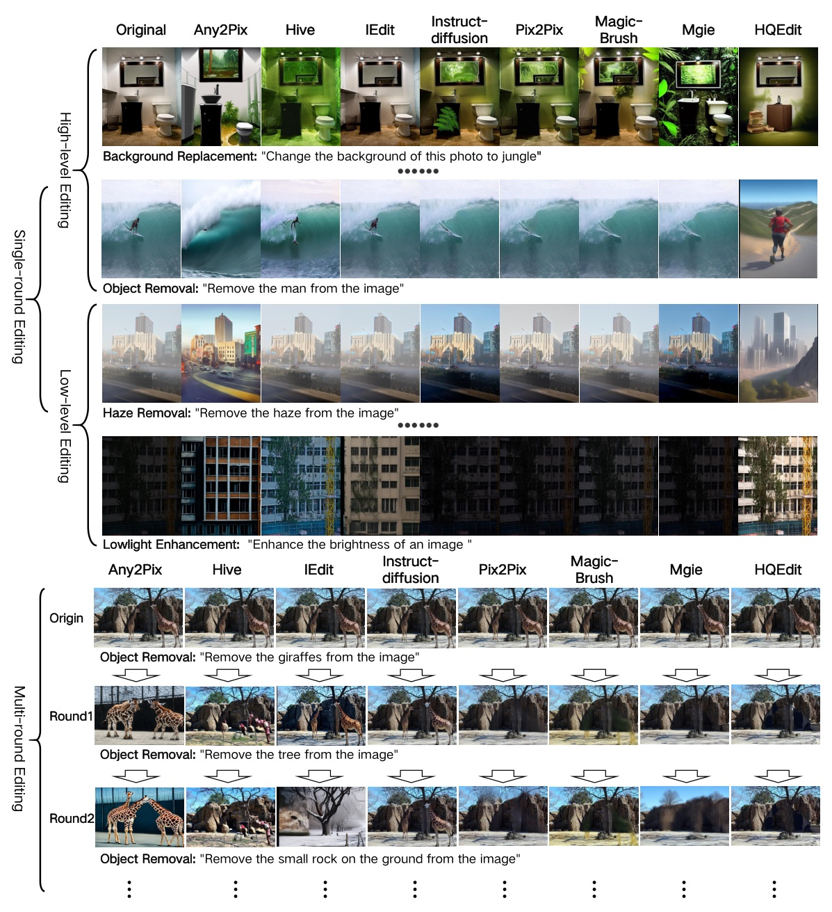
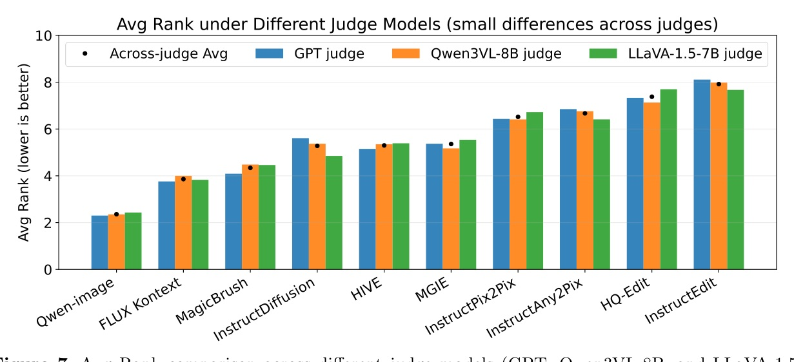
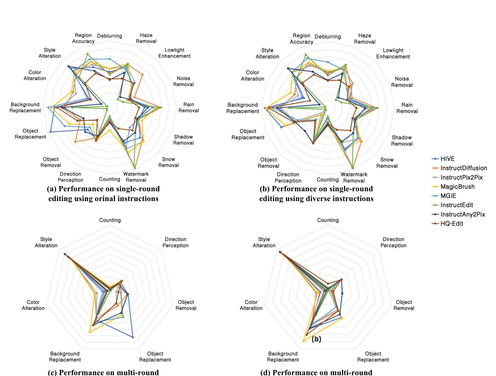
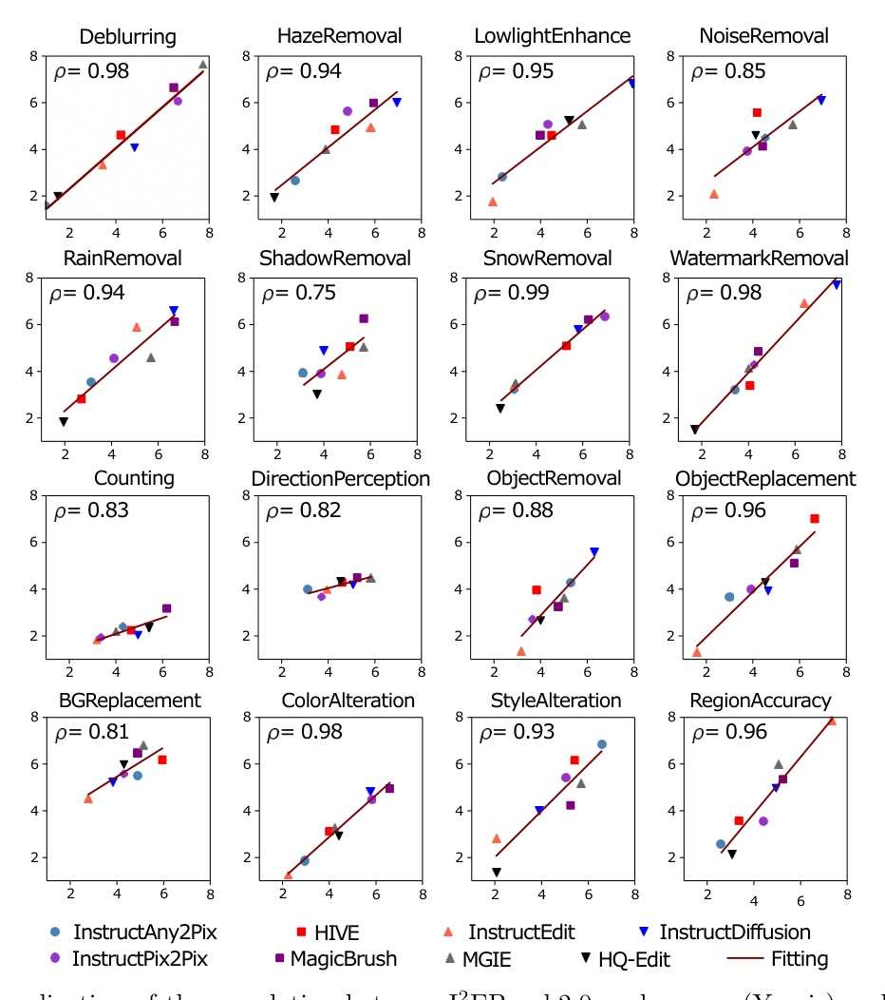

期刊延伸版（前身為會議論文 I2EBench）：新增多輪資料集、美學分析、跨評審官研究。Code/Data: github.com/cocoshe/I2EBench
第一個同時評估「單輪精度」與「多輪一致性」的指令式影像編輯基準——每個維度配專屬指標（不是一把 CLIP score 套全部），再用三個異質 VLM 評審官交叉驗證，證明量到的是「任務」而非「評審官的語言偏好」。


| # | Model | GPT-4V | Qwen3VL-8B | LLaVA-1.5 | Across-judge | Max Diff |
|---|---|---|---|---|---|---|
| 1 | Qwen-image | 2.30 | 2.35 | 2.43 | 2.36 | 0.13 |
| 2 | FLUX Kontext | 3.76 | 4.00 | 3.83 | 3.86 | 0.24 |
| 3 | MagicBrush | 4.09 | 4.48 | 4.46 | 4.34 | 0.39 |
| 4 | InstructDiffusion | 5.61 | 5.37 | 4.85 | 5.28 | 0.76 |
| 5 | HIVE | 5.15 | 5.35 | 5.39 | 5.30 | 0.24 |
| 6 | MGIE | 5.37 | 5.17 | 5.54 | 5.36 | 0.37 |
| 7 | InstructPix2Pix | 6.43 | 6.41 | 6.72 | 6.52 | 0.30 |
| 8 | InstructAny2Pix | 6.85 | 6.76 | 6.41 | 6.67 | 0.43 |
| 9 | HQ-Edit | 7.33 | 7.13 | 7.70 | 7.38 | 0.57 |
| 10 | InstructEdit | 8.11 | 7.98 | 7.67 | 7.92 | 0.43 |
Avg Rank 越低越好。Qwen-image 不只第一，Max Diff 0.13 也最小＝跨評審官最穩定。Qwen-image / FLUX Kontext 正是期刊版新加入的強指令跟隨模型。

擔心「基準只是在量 GPT 的語言偏好」？他們把全部模型在三個架構迥異的評審官（GPT-4V / Qwen3VL-8B / LLaVA-1.5）下重跑一遍——模型排序穩定、維度難度模式一致、多輪一律掉分。結論對異質評審官 robust，不是 GPT 家族偏見。
I2EBench2.0：逐維度專屬指標 ＋ 跨評審官交叉驗證 ＋ 單／多輪雙軌——把「評估 IIE」從一把 CLIP score 升級成可信的選型地圖。


Each of the 16 dimensions is equipped with its own tailored evaluation method, instead of relying on a single CLIP-based score for all edit types.
16 個維度各配專屬評估法，而非用單一 CLIP 分數套所有編輯類型。§3.1 p6–8
In multi-round editing, every round must succeed; if any round fails, the entire multi-round sample is scored as failed.
多輪編輯中每一輪都必須成功；任一輪失敗，整個多輪樣本即判為失敗。§3.1.3 p8–9
Model rankings remain stable across three architecturally-distinct judges, indicating the benchmark measures the task rather than a judge-specific bias.
模型排名在三個架構迥異的評審官間保持穩定，顯示基準量的是任務本身，而非特定評審官的偏好。§4.1.5 p18